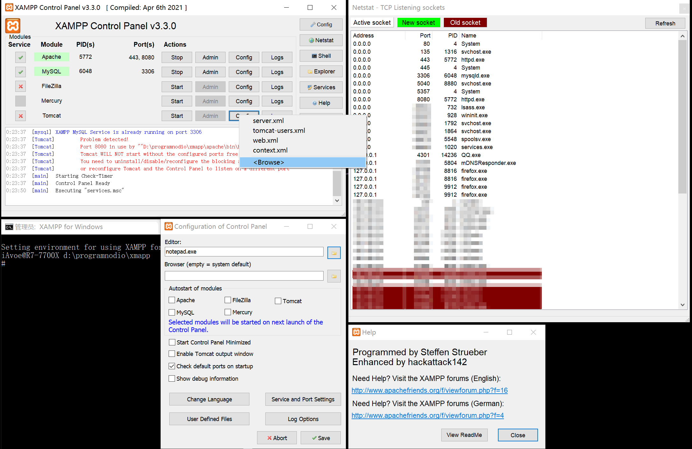

必备常识
封装与解封装 - Multiplex/De-multiplex
- 文件格式中，类似于 .zip .rar 文件将多个文件（视频，音频，字幕，字体）合并为一个文件
- 信号处理中，电台将多路音频流封装为一段模拟信号，接收端通过调整接收频率来接收其中一路信号，每路信号占据一定的频宽/带宽
- 视频封装文件记录播放所需的元数据，如视频帧率、音视频同步、色彩标识等：
- MP4 是最常见的格式，适用于网站和本地播放，但对字幕文件的支持性较差。
- MKV 可以封装几乎所有已知的视频/音频/字幕格式，但无法直接导入视频编辑软件
- FLV 是一种轻量级封装格式，更适合网站播放，以及需要定时切分录制的格式。
- MOV 是由苹果公司开发，用于与其软件和硬件兼容，也是 Adobe Premiere 剪辑软件最适用的格式之一
- M4A （MPEG for Audio）是一种音频流封装文件，支持多种音频流，封面图片，详细艺术家，乐队信息元数据封装的格式
- M3U 由苹果公司研发，用于在线播放音频的封装（然后被用于视频封装），M3U8 指 UTF-8
元数据 Metadata
描述数据的数据，例如食品包装上的标题、成分表、图片、营养信息、教你如何正确打开包装的附注就是一种元数据。视音频封装文件中的元数据并不是视音频本身，但播放器需要其中的一些信息才能以正确的帧率、音视频对齐、色彩标准，使用正确的视频解码器，音频解码器，以正确的打开“包装”。
编解码
- 编码 Encoding：是数据格式的转换。压缩是编码的一种形式
- 解码 Decoding：是将被压缩的信号还原或播放的解压缩。一般来说，压缩程度越高，解码速度越慢
- 软解 Software Decoding：使用通用电路播放流文件，通常具有更高的兼容性，更高的能耗/发热
- 硬解 Hardware Decoding：使用专用电路替代软解，通常具有更低的兼容性，更低的能耗/发热
- 例如：libmxv，opencl，MMAL，direct3D
- 软编 Software Encoding：使用通用电路编码流文件，通常具有更完整的压缩功能但速度较慢，能耗/发热较高，同码率下的画质比硬编更高
- 硬编 Hardware Encoding：使用专用电路编码流文件，通常具有较少的功能但速度更快，发热更低
- 例如：NVENC，MMF/Venus，Intel-QSV，Conexant，elgato
- 由于编解码器的复杂性，软硬编解码方案在相同价格下存在较大差异，因此最终取决于预算、速度和画质要求
数据大小单位
- bit（比特）：最小的计量单位，\(1 \text{bit} = \frac{1}{8} \text{Byte}\)，衡量传输流量
- Byte（字节）：\(8 \text{bit} = 1 \text{Byte}\)，衡量文件大小
- kilo-bit（Kb，千比特）：1000 比特
- kilo-Byte（KB，千字节）：1000 字节
- mega-bit（Mb，兆比特）：10002 比特，或 10242 = 1048576 比特
- mega-Byte（MB，兆字节）：10002 字节，或 10242 = 1048576 字节
- giga-bit（Gb，吉比特）：10003 比特，或 10243 = 1073741824 比特
- giga-Byte（GB，吉字节）：10003 字节，或 10243 = 1073741824 字节
图：bit 与 byte 的转换
码率/比特率 Bitrate
文件体积每秒，单位 bps，Bps，Kbps，KBps，Mbps，MBps，Gbps，GBps 等。“ps”即 per second，也可写作“Kb/s，Mb/s”等。
- 长 1 分钟，10MB 大小的视频文件的平均码率为\( (10 \div 1 \times 60) \times 8 \text{bit} = 1333.3 \text{Kbps} \)
- 同样 10MB 的视频下载 1 分钟，平均下来网速即\( \frac{10}{1 \times 60}=166.67 \text{KBps} \)，\( 166.67\times 8 \text{bit} = 1333.33 \text{Kbps} \)
- 这里的 ÷1 代表缩放到一分钟范围，×60 代表缩放到一秒，×8bit 代表 1 Byte 转 8 bit。
色彩
人眼感光细胞捕获特定强度的电磁波（可见光），然后通过大脑处理，产生了我们所看到的幻觉。实际上，色彩只有一个标量属性，即频率。

图：色彩的波形频率变化，见维基百科。
亮度
- 物理亮度：可见光电磁波的强度或振幅，以流明 lumen/lm，坎德拉/烛光量 candela/cd，或尼特 nits/cdm2 计量：
- 1cd/lm 大约为一支普通蜡烛的亮度。
- 由于是强度，一般来说，灯泡电压越高、火药能量密度越高，发光就越明亮
- 因此定义：能量和光强的相关性呈正比
- Nits 代表 1cd 光源投射到一平方米（一般情况下距离一米）区域后所剩的亮度，主要用于显示器的亮度设定。一般来说，1 nit ≈ 3.426 lm，但实际的换算关系取决于光源和测量仪器的不同与误差。
- 软硬件亮度：代表灰度像素值的大小，值越大表示像素点越亮，但最大亮度受硬件和用户设定限制。伽马 gamma/Y 值定义了像素的亮度范围，最小值 0 为黑色：
- 位深 4bit 下，最大值为 15（或 0xF），代表白色
- 位深 8bit 下，最大值为 255（或 0xFF），代表白色
- 位深 10bit 下，最大值为 1023（或 0x3FF），代表白色
YUV / YCbCr 色彩空间图像的亮度平面 Y，或者 RGB 图像分离出的亮度/灰度平面，有时也被称为伽马平面或 Y 平面。
灰度/灰阶 Grayscale
代表将色彩信息去除，只保留黑、灰、白色的单通道图像。
色深 Depth
色深代表软硬件亮度从黑到白之间过渡的密度细分。由于计算机使用二进制表示，因此通常以如 4bit 表示 16 色深（\( 2^4 \)）、8bit 表示 256 色深（\( 2^8 \)）、10bit 表示 1024 色深（2^10）的形式呈现。早期模拟电视使用 \( 0 \text{mV} ~ 700 \text{mV} \) 的电压表示色深，但考虑到电视台调制，以及受一定干扰的信号可能超出最大电压（导致烧坏显像电子枪或老化屏幕荧光粉），因此在这个区间内限制了色深的范围。
限制后的色深将被重新映射到缩减的信号范围内，导致色深的密度降低。数字电视的 Bt.601 标准考虑到了质量不一的 DVD 播放机传输模拟信号到模拟电视的情况，因此也定义了有限的色深范围。其中：
- 完整（Full：8 位色深下，色彩范围从 0 到 255 的完整 256 色深区间，密度较高，适用于游戏，软件和网页的矢量图场景
- 有限/模拟/电视（Limited/Analog/TV Limited）：8 位色深下，色彩范围缩减至 16 到 235 的有限区间，密度较低，通常用于模拟信号电视，但因为跨平台兼容性最高，所以仍是推荐用于处理多媒体的色深
- 当 Limited/TV 范围的硬件连接到 Fullrange 硬件（使用 HDMI 连接显示器时），显示器总是会缺失最暗到最亮的色彩范围，呈现出灰蒙蒙的画面，需要额外设置才能纠正
- 当 Fullrange 的硬件连接到 Limited 范围的硬件时（例如电视设置为 Full，但连接到设置为 Limited 的 PS4/Xbox 时），可能会出现画面过亮、过暗、饱和度过高的错误显示
- 因此，若整个显示系统（操作系统，显示驱动，显示器）都支持完整色域，则应设置为完整；否则一律设置为有限
- 录制视频素材时，为了兼容所有多媒体平台（如网页浏览器，视频网站），通常会将其设置为有限范围
- 抖动滤镜可以创造色深增加的错觉，以改善色彩平滑度
图：完整色深 Fullrange 与有限/TV 色深 Limited，包括上述说明的更优版本见硬件茶谈。
伽马曲线/伽马映射
- 生理伽马映射：人眼对于亮度的感知与物理亮度的线性变化所异
- 人眼敏感于低至中等亮度的变化，而对中高亮度的变化则相对不太敏感。因此，当内容的亮度变化呈直线关系时，人们会感觉到“发白”
- 许多游戏的初始设置中，“将滑块调节到能清晰看到左侧暗部图像”实际上就是在调节伽马曲线，而且是生理伽马曲线
- 相机 CMOS 捕获的线性亮度（RAW 直出格式）在人眼看来会显得过亮“发白”，需要进行“黑化”校正
- 软硬件伽马映射：屏幕电压与线性亮度变化之间的关系并非线性
- CRT 显示屏一般需要放大电压到 \( v^{2.2} \) 才能够直线地显示亮度变化
- sRGB 标准则因为 CRT 显示器的特性相当于已经对图像进行了“黑化”处理，因此在录制过程中就会将图像进行“白化”处理：\( \gamma^{\frac{1}{2.2}} \)
- 若编辑 RAW 直出图像的软件未打开 Adobe 软件默认关闭的“按伽马系数混合 RGB 颜色，伽马值为 1”的设定，图层透明通道之间的过渡会显得杂乱不堪。
伽马矫正
分为两种方式：向上提亮缩放“白化”和向下变暗缩放“黑化”。矫正的算式为：\( s = cr^\gamma \)
图：伽马矫正的指数算式，见desmos 互动例。
对比度 Contrast
通常情况下，表示对音量、冷热、远近等两种程度的差异大小缩放。在图像/显示器中，对比度则代表最亮和最暗的显示亮度差异。图片的对比度低会显得发灰，因为当前的亮度设置位于这个灰度水平上。
人眼在黑暗中观看同样的视频时，有些场景会显得过亮，有些场景则会显得太暗。这种情况下，降低对比度即可解决该问题；而在阳光下观看同样的视频时，即使将手机电脑调到最大亮度，也无法清晰看到暗部场景。这种情况下，降低对比度并增加亮度即可解决该问题。（因此十分建议手机厂商在亮度条下加上对比度条，以便用户根据环境调节显示的对比度）。
饱和度 Saturation
一般指液体在特定压力和温度下溶解了某种成分的程度，达到最高时会沉积而不再溶解。图像中则代表颜色接近 100% 纯色的程度或“彩度”，饱和度越高则图像越鲜艳，为零时得到灰阶图像；最大时得到纯色图像。对比度接近饱和度，但不是饱和度。
像素 Pixel / pix / pel / px
像素是组成图像的最小单位，决定了图像的物理大小和分辨率。一般情况下分为屏幕的硬件像素大小，和图片/视频的软件像素大小两种。当软件像素小于硬件像素时，显示 100% 大小的图片会变小，或者通过缩放滤镜将图片放大以适应屏幕。反之，如果硬件像素大小小于软件像素，则会使用缩放滤镜将图片缩小至合适的尺寸，或者图片会溢出屏幕。图像中的每个像素都有位置和颜色两份信息。
每英寸像素 Pixel Per Inch / PPI
指屏幕或印刷设备上的物理像素密度，这取决于设计时预期的观看距离。屏幕的 PPI 高则适合近距离观看，因为物理像素更密集。在印刷设备的 PPI 越高，打印出的图像就越细腻。软件的 PPI 主要用于计算新建图像的像素大小和分辨率，以确保图像有着适当的大小和清晰度。
矢量图形通常不涉及 PPI 概念，因为它们以数学方式描述图像，可以无限放大而不失真。
高 PPI 的显示器是一种较新的规格，旧的软件在这些显示器上会出现模糊，或界面过小的问题，见硬件茶谈。
位图 Bitmap 与矢量图 Vector
位图使用像素和元数据（例如 n 个像素后换行）来表示图像。每个像素都包含特定的颜色信息，通常表示为 RGB 或 YCbCr 值。用于描述照片和复杂图像，但当放大时会失真，因为像素的信息已经固定，而放大只是用滤镜在其中插值填空的结果。
矢量图使用图形函数代码（例如 JavaFX，SVG）来描述图像。它们以函数定义图像的形状、线条和颜色。矢量图可以被放大而不失真，并且可以在不同的尺寸和分辨率下保持清晰度，因为它们是基于数学公式的。
尽管矢量图优点明显，但它们相对较少见，因为需要编写复杂的渲染器来处理它们，而且难以确保在不同平台上的一致性。然而，如果我们将“文本”视为一种矢量图形式的话，位图在实际应用中反而才是更为少见的。
色彩空间 Color Space
用于表示和处理图像颜色的数据格式，具有适用于各种不同应用场景的多种类型。最常用的是分为硬件和操作系统的 RGB 色彩空间，以及内容的 YUV/YCbCr 色彩空间。见 Captain Disillusion 的科普。

RGB 色彩空间由红色 Red、绿色 Green、蓝色 Blue 三个通道组成，每个通道的数值表示相应颜色的强度，对应着显示器红色 LED，绿色 LED 和蓝色 LED。常用于显示器、摄像头和图形处理等硬件和软件系统中。
YUV/YCbCr 色彩空间是另一种常见的色彩表示方式，用于存储和传输视频数据。Y 代表亮度 Luminance，而 U、V 代表色度 Chrominance。YCbCr 特指数字信号，YUV 特指模拟信号，再无区别。由于后者字数更少且不需要频繁切换大小写，打字更容易，所以 YUV 拼写后来逐渐被当做讨论用的“平替”。
| 🎆色彩格式 | 构成色 | 特点 | 存在原因 | 支持范围 |
|---|---|---|---|---|
| RGB | 红绿蓝 | 通用 | 使显示器/照相机通用 | 几乎所有可视媒体 |
| ARGB | α 红绿蓝 | 透明通道 | 便于图层化编辑 | 图片，部分视频 |
| CMYK | 湛 zhàn 洋黄黑 | 减法色彩 | 卖墨盒 | 打印纸 |
| YCbCr (YUV，似 YPbPr) | 白蓝 - 黄红 - 绿 | 压缩 | 压缩视频图片 | 所有有损压缩 |
色度采样 Chroma Subsampling
YUV/YCbCr 色彩空间下，利用人眼对色度细节不敏感的特性（见下图全分辨率和半分辨率的色度面），降低色度平面的分辨率，从而压缩图像。色度采样格式通常用三个数字表示，例如 4:4:4、4:2:2 等。
A:B:C 代表微观分辨率下，每个长 A 像素，高 2 像素的空间，第一行缩到 B 个色度像素，第二行缩到 C 个色度像素。如 4:2:2 代表色度平面的每个 4x2 微观区间中，第一行的色度分量保留 2 个像素，第二行的色度分量也保留 2 个像素。色度采样详见下表：
| 👾采样 | 1920x1080 下宏观 | 色度 4x2 微观 | 特点 | |||
|---|---|---|---|---|---|---|
| 4:4:4 | 亮度，色度皆 1920x1080 | 色素 | 色素 | 色素 | 色素 | 逐行，读写亮色度而不用从 RGB 转——剪视频快 |
| 色素 | 色素 | 色素 | 色素 | |||
| 4:2:2 | 亮度不变，色度 960x1080 | 色素 ← | 色素 ← | 逐行扫描，颜色像素靠插值还原。直接读写亮度所以剪视频比 RGB 快 | ||
| 色素 ← | 色素 ← | |||||
| 4:2:0 | 亮度不变，色度半宽半高 960x540 | 色素 ← ↑ ⬉ |
色素 ← ↑ ⬉ |
|||
| 4:4:0 | 亮度不变，色度全宽半高 1920x540 | 色素 ↑ |
色素 ↑ |
色素 ↑ |
色素 ↑ |
|
| 4:1:1 | 亮度不变，色度 1/4 宽全高 480x1080 | 色素 ← ← ← ← | 交错扫描 Interlaced，横着扫就不会把另一场的帧参考而浪费算力了 | |||
| 色素 ← ← ← ← | ||||||
| 4:1:1-par4:3 | 亮度 3/4 宽全高，1440x1080 色度 3/16 宽全高，360x1080 | 色度像素 5.333×← | ||||
| 色度像素 5.333×← | ||||||
| 4:2:0-par4:3 | 亮度 3/4 宽全高，1440x1080 色度 3/8 宽半高，720x540 | 2.667 ← ↑ 2.848 ⬉ |
2.667 ← ↑ 2.848 ⬉ |
逐行扫描，非方形亮度像素，par 通常是 4:3 |
||

图：RGB 与 YCbCr 的转换，色度采样的使用及编解码与录制，传输，显示的关系
压缩的策略
根据硬件的算力和带宽两种限制选择有损压缩，无损压缩和未压缩。一种（图/视/音频）编码可集成全部三种策略。
- 算力 Computing Power：处理器或硬件解码器的速度和效率，低于解码难度（编码复杂度）则不能流畅播放。
- 带宽 Bandwidth：网速，硬盘读写和内存传输带宽，低于带宽压力（Mbps）则不能流畅播放。
- DVD 播放机，蓝光播放机为确保流畅，也会和网络传输一样限制带宽。
| 编码强度设定 | 带宽负载 | 解码负载 | |
|---|---|---|---|
| 未压缩 | 无 | 最高 | 最低 |
| 无损压缩 | 低 | 高 | 低 |
| 无损压缩 | 高 | 中~高 | 中~低 |
| 有损压缩 | 低 | 高 | 低 |
| 有损压缩 | 高 | 低 | 高 |
只要录制，剪辑，调色，混音，导出中一个环节用错了录制设备，采样率/色深，色彩空间，分辨率，像素宽高比，颜色混合，伽马映射等设定，损失就已成定局，此时选择有损或无损编码就不再有意义。
视频压制
视频压制是视频编码器用户追求画质、压缩率和速度的逻辑。单纯地追求速度并不能发挥编码器的最大压缩能力。很多人一开始只看到硬件编码器速度快，就忽视了软件编码器的高压缩率。
视频压制三角定律
确定压缩策略和设备购买的方法。专用编码器通常用于单一目的，但难以控制损失；通用编码器用途广泛，但损失易于控制。高算力适合通用策略，而低算力则适合专用策略。
图：三种关键出发点构成的三角形。其“完美中心点”的存在和必要性取决于软硬件和用户
音频格式（一维）
最简单的结构为：脉冲编码调制Pulse-code modulation PCM信号
| 🎶压缩 | 格式 | 音质 |
|---|---|---|
| 有损 | mp3，aac，ogg（vorbis/opus） | 取决于耳机/音响，混音，声场。分为 HiFi 音频和监听音频两种质量参考 |
| 无损 | flac，alac，ape，it | |
| 未压缩 | wav（PCM） |
图像格式（二维）
最简单的结构为 PCM 信号 + 每 n 个像素换行的元数据
| 📷压缩 | 格式 | 最大 RGB 色深 | 最大 YUV 色深 | 最大 CMYK 色深 | 动图 | HDR | 透明 |
|---|---|---|---|---|---|---|---|
| 有损 | jpg | 8 8 8 | 8 8 8 | 24 24 24 24 | |||
| 有~无损 | gif（编码无损，颜色少了） | 24×3 中取 8×3 | √ | 仅 1bit | |||
| webp | 8 8 8 | 8 8 8 | √ | √ | |||
| jpg-XR（兼容 jpg） | 32 32 32 | 8 8 8 | 16 16 16 16 | √ | √ | √ | |
| avif，heif/heic，filf | 32 32 32 | 16 16 16 | √ | √ | √ | ||
| 无损 | pdf，jpg-LS，png | 16 16 16 | 32 32 32 32 | 仅 mng | √ | ||
| 有损~无损~未压 | tif | 16 16 16 | 8 8 8 | 128 128 128 128 | √ | √ | |
| 未压缩 | raw，bmp | 24 24 24 | 仅 raw | √ | √ | ||
| dpx | 64 64 64 | 16 16 16 | √ | √ |
视频格式（三维）
最简单的结构为一组图片。
| 🎥压缩 | 格式 | RGB/YUV 色深 | HDR | 透明 | |
|---|---|---|---|---|---|
| 有~无损 | qt，hevc，avc，vvc，vp8/9，DNxHR/HD，prores | 12 12 12 | 除 avc，vp8 | 仅 prores | |
| 无损 | rawvideo | 32 32 32 | √ | ||
| cineform | 16 16 16 | √ | |||
| 有损~无损~未压 | Flash 动画 | 内嵌图片决定 | |||
图片与视频之间还有图像序列，动图两种中间格式。图像序列直接储存视频为大量图像，一般用于录制素材；动图如 .gif，.mng 则几乎和视频流一致，就是未封装而储存了帧率的数据流。
滤镜/滤波器 Filter 与滤镜工具
通常用于过滤水和净化空气。在信号中代表处理一维音频和二维视频信号的算法。滤镜工具代表能够将滤镜应用到信号上的软件或插件，比如 Adobe Premiere Pro，After Effects，ffmpeg，DaVinci Resolve，ScreenToGIF，FL Studio，Reaper，Ableton，Audition，GIMP，Photoshop，FSCapture，LightRoom，OpenCV 等编辑图像、视频和音频的工具。AviSynth(+)和 VapourSynth 严格上称为帧服务器，因为需要连接一个编码器才能导出视音频。
抖动滤镜 Dither Filter
源自早期操作系统只能显示有限数量的颜色，因此采用了高频闪烁两种颜色的方法来欺骗视觉（副作用是使人感到晕眩）。在图像、音频和低端显示器中，抖动滤镜代表通过分辨率或采样率来换取位深的加噪补偿手段。
具体来说，通过间隔几个像素就调亮/调暗一个像素的颜色，使得宏观整体上看起来像是淡化或加深；在音频位深分量两端的采样点间成比例的（以方形波或三角波信号）快速摆动，从而利用扬声器反应速度，起到淡化或深化偏移宏观上位深的效果。

抖动滤镜的效果主要是欺骗视觉，但因为效果独特，所以衍生出了 Ditherpunk 抖动朋克美术。典型如 1bit 游戏「奥博拉丁的回归」贯彻了这种美学。其原理是利用随机，蓝噪声，蓝噪声，黄金分割，Riemersma 等不同的加噪算法来定义游戏引擎的材质。
图：图像噪声算法
缩放滤镜 Resize Filter
Windows 系统一般用双线性缩放放大 PPI 小的软件，视频视频播放器一般用 bicubic 或 lanczos 插值
临近取样插值 Nearest Neighbour interpolation（NN）：
- 2x2 的四个像素点移动到缩放后的四个位置
- 待插值的像素中，距离哪四个点近的像素就取哪个像素的值
双线性插值 Bi-linear interpolation（Bi-lerp / Bilinear）：
- 2x2 的四个像素点移动到缩放后的四个位置
- 横向和纵向的点（像素值）间各连一条线
- 采样得到中间的像素，完成四边的插值
- 四边之间接着分为横向与纵向边缘
- 横向和纵向的边（像素值）间各连一条线，共六横六纵
- 所有线段接着采样得到中间的插值像素点，且在横纵线的两种插值之间取平均
样条插值 Spline interpolation（spline）：
- “样条”代表软木条，通过铁钉塑形结合木条的应力做出连贯且一致的曲线
- 这种性质可以用多项式准确描述，而图像中的“铁钉”就是像素值
- 图像中的“木条”就是在 n 个“铁钉”构成的 n-1 个区间里各画一条曲线
- 二次多项式插值 quadratic interpolation 代表三个点间用二次多项式插值
- 三次多项式插值 cubic interpolation 代表四个点间用三次多项式插值，适用于放大图像
- 连起的线必须平滑连贯，数学上叫做“二阶导数连续”
- 因此，放大一个 2x2 的区间需要 4x4 范围的采样点
- 插值的与逻辑和双线性插值一致，同时是三次多项式插值，则是双三次多项式插值 bi-cubic interpolation
Lanczos 插值：
使用 sinc 函数取近似，且引入了窗函数来矫正 sinc 函数，同时要计算 lanczos 核实现插值。计算量大，准确度略高于 bicubic 插值。
神经网络缩放滤镜：
通过认知大量训练数据，在其中找出更高维度规律的情况下，利用这些规律推断像素值。计算量极大，准确度时高时低。
宽高比/展弦比 Aspect Ratio
固定翼飞机或者矩形的最小两边分量。被忽略的“长”是因为飞机相对地面，屏幕相对人眼的 z 轴。而换算长短边如 16:9 高 720 的方形像素视频，其宽就是 \( 720 \div 9 \times 16 = 1280 \)。
图：16:9 的矩形整数偶数放大后的图像分辨率
图片格式一般支持奇数分辨率，视频一般仅支持偶数分辨率。
程序的交互界面 Interface
图形界面交互 Graphic user interface GUI：通过图形元素（如按钮、滑块、菜单等）进行用户交互的界面设计。随着程序复杂度的增加，设计出好用的界面会变得更加困难。因此，只有在利润丰厚、注重美学设计、且拥有设计人才的行业才会推出外观精美的 GUI。然而，外观好看并不一定意味着好用、再而，很多时候有外观用都是一种奢求。
图：音频插件宿主软件 FL Studio，外加一堆免费和“免费”音频插件随便摆放的外观
图：网页服务器宿主软件 XMAPP 的 GUI（左下为 CLI），作为跨行业对比
命令行交互 Commandline interface CLI：在如 Terminal、Bash、CMD 和 PowerShell 的终端环境中，用户可以手动输入命令并按回车键查看结果。通常，只要输出结果有一定的文本排版，就可以轻松阅读。随着使用的增加，CLI 可能反而会变得比 GUI 更方便。然而，由于某些命令太长，而且需要储存变量，因此为了简化操作，人们会将其写作批处理、Shell 等命令脚本文件。例如PowerShell 一站式系统硬件检测的脚本。
应用编程交互 Application programming interface API：定义了软件应用程序如何相互通信的规则和工具。用于使开发人员和从程序的外部访问，以便在自己的应用程序中集成其中的功能。API 可以被看作是 CLI 的映射源，当开发者没有编写 CLI 参数或 GUI 时，可以退而求 API 来调用所需的功能。尽管 API 通常不直接面向最终用户，但它们在软件开发中非常重要
帧率 Frame Rate / Frames per second FPS
帧 Frame 通常用来描述连续图片序列中的单张图片。帧率 Frame Rate 是指每秒显示/刷新的图像帧数。帧率越高，则连续背景变化越流畅。因此，在游戏中，例如微软模拟飞行、极限着陆等模拟客机的游戏，以及电影运镜等故意限制背景变化程度的场景，其帧率一般只需要 30fps 左右（每秒更新 30 张画面）。而对于背景高速运动的游戏，比如模拟赛车等，即使是在手机平台上，最低帧率也不能低于 120fps。
在动漫中，如果背景高速移动变化时的帧率低于 60fps，观看体验会大大降低，例如《进击的巨人》中的部分场景。相反，对于一些其他动漫，如果设计师本意是为了降低成本而利用视觉暂留原理来创建顿挫画面，那么低帧率反而会破坏观赏体验。
逐行 Progressive 与交错 Interlaced 扫描
逐行扫描通过一行行从左到右地刷新像素来构建图像，是最为常用的屏幕刷新方式。交错扫描的方法不同，它使用 YUV 4:1:1 采样，将屏幕的奇数像素行视为一个场，偶数像素行视为另一个场。这两个场在录制时错开一定时间，这样在模拟电视上观看时会产生 60fps 的视觉效果。交错扫描的原理是为了节省模拟电视信号的频段区间（与收音机接收电台信号一样）。因此，通过在时间上分隔行来节省空间，可以几乎将每个频道的频宽减半，例如（\(525 \text{行} \times 30\text{fps} = 15.75 \text{MHz}\)）。
小数帧率 / 丢帧
NTSC 模拟电视每个频道的标准带宽大约为 6MHz（但实际宽度仅为 4.5MHz）。接下来发生的事谁都没有预料到——彩色电视出现了。结果是原本的频宽完全放不下彩色电视台信号，而且由于电视机已经售出，不可能更改用户家里电视的频宽和扫描线的数量。最终解决方案是在每秒 30 帧的基础上丢掉一帧，并加速 1 秒到 1.1001 秒，以保持与帧率的对齐（同时也引入了 YUV 4:2:0 色彩空间）。经过这般折腾，码率/频宽总算被压缩了下来，但后继影响了数字视频的丢帧帧率标准——为了与模拟电视兼容Reddit: GhostOfSorabji 。
在视频编辑中，对齐帧率不同视频是极其困难的操作，而这个天大的难题只需更改录制设定（点击两三个按钮）即可解决。
图：不同帧率的对齐地狱，见Taran Van Hemert
恒定 Constant 与可变 Variable 帧率
恒定帧率的视频播放和剪辑都最具兼容性。可变帧率有助于解决手机录像时的发热和耗电速度快的问题，同时，将可变帧率转换为恒定帧率以正常剪辑视频时则需要重新编码。因此，录制视频时应根据设备的电量和散热能力进行选择，而录制需要剪辑的素材时则应选择恒定帧率。
编解码的过程
视频的打开
- 用户点击打开视频文件
- 操作系统根据文件扩展名，查找默认的应用程序
- 应用程序根据文件路径，在文件系统中定位视频，并读取文件的元数据，包括文件头和其他格式信息
- 应用程序根据文件的元数据确定所需的解码器和其他资源，然后在计算机的内存中分配空间
- 应用程序调用适当的解码器来解析视频文件，并将视频和音频数据解码为未压缩的原始数据
- 解码后的视频数据传递给图形处理芯片 GPU，而音频数据则传递给声音转换芯片 DAC。
- GPU 将图像信号转换为图像，输出到显示器
- 显示器上的芯片将图像数据转换为对每个像素上电路的控制，并显示出来
- DAC 将音频信号转换为模拟信号，并通过扬声器播放出来
此步骤涵盖了基本的视频打开过程，在实际情况下会因为软硬件，用户设定，以及操作系统逻辑的不同而有出入。
视频的压制
- 打开编码器
- 用户可以通过多种方法打开编码器：
- 如果编码器内置了如 Lavf 的解封装和解码动态链接库，则编码器可以自动解封装、解码和封装视频文件：
- GUI 软件通过发送 CLI 命令，或者使用像 Bash/CMD 这样的 CLI 工具来打开编码器程序。
- 编码器通常根据输出文件的后缀名自动封装视频文件。
- 如果编码器没有内置解封装解码功能，则通常会使用 ffmpeg 内部的解封装工具和编码器。
- 可以使用 Unix Pipe 将上游如 ffmpeg、VapourSynth、avs2yuv 连接到下游如 x264/5 的编码器
- 如果编码器内置了如 Lavf 的解封装和解码动态链接库，则编码器可以自动解封装、解码和封装视频文件：
- 用户可以通过多种方法打开编码器：
- 解封装和解码
- 解封装解码工具将已解压缩的 YUV for MPEG 或 RAW 格式视频流传递给编码器，编码器得到输入信号。
- 如果输入是 RGB24 的 RAW 色彩空间视频流，通常需要使用编码器内置的色彩空间转换功能将其转换为 YUV 格式。
- 如果编码器是录像设备的一部分，则需要根据录像设置将视频流拆分为视频帧。
- 解封装解码工具将已解压缩的 YUV for MPEG 或 RAW 格式视频流传递给编码器，编码器得到输入信号。
- 编码过程
- 前瞻进程：Lookahead 从更小的分辨率预先分析未来几帧的复杂度、运动和场景切换 scenecut 的估计。
- 分帧/帧类型决策：根据前瞻进程的结果和关键帧间隔 keyframe interval 设置关键帧 I 帧与参考帧 P-B 帧。
- 粗分块：
- x264 中粗分到宏块 Macroblock MB
- x265 中粗分到编码树单元 Coding Tree Unit CTU
- 动态搜索：Motion Estimation ME 找到当前帧与参考帧之间的相似区域，并为每个块分配动态向量。
- 运动补偿：Motion Compensation MC 对比实际画面与搜索到的向量生成预测块，并补偿¼子像素精度的对齐偏差。
- 细分块：根据 MEMC，进一步细分宏块或编码树单元到最小的 4x4 编码块上。
- 帧间残差编码：对比实际画面与动态搜索与补偿后所得的图像，得到残差，并对残差进行变换和量化，存储到 P-B 帧上，在解码时与 I 帧叠加以得到原始画面。
- 帧内预测：在 I 帧或 P 帧的 I 块上，从前面步骤中生成的候选夹角、DC、趋平中的最佳模式冗余帧内的块，得到预测块。
- 帧内残差编码：对比实际画面与帧内预测得到的残差块，进行变换和量化，存储在预测块中，在解码时与预测模式叠加以得到原始画面。
- 跳过块编码：跳过帧间或帧内残差编码的块，进行变换和量化。
- 变换：将图像从空间域转换到低频到高频信号分量之间的每个级别，也称为频域。
- 量化：根据用户设置的质量级别，削减高频信号分量，这一步骤对画质和文件大小影响最大。
- 熵编码/文本编码：将变换和量化后的频域分量统计为最小可能的二进制数。
- 生成视频流
- 编码器将生成的数据流逐个 GOP Group of Pictures 打包，并附加如色彩空间、Supplemental Enhancement Information SEI、Video Usability Information/High Dynamic Range VUI/HDR 等元数据，得到视频流。
- 封装视频流
- 用户可以通过多种方法将视频流封装为 .mp4、.mkv、.mov 等格式：
- 如果编码器内置了像 Lavf 的解封装解码动态链接库，编码器可以根据输出命令行的文件后缀名自动完成。
- 如果编码器没有内置解封装解码功能，则通常会使用 ffmpeg 内部的编码器和解封装工具，使编码完成后自动封装。
- 可以使用工具如 ffmpeg、MP4Box，MKVToolNix 等来进行封装。
- 用户可以通过多种方法将视频流封装为 .mp4、.mkv、.mov 等格式：

视频编码的标准（MDN Docs）
“编码”一般称为 coding 或 codec。其中 code 即代码，其末尾加 c 是一种名词化的形容词，如 politic/political，magic/magical，electric/electrical。
| ♙编码 | 全程 | 一般封装格式 |
|---|---|---|
| AV1 | AOMedia Video 1 | MP4，WebM，MKV |
| AVC (H.264) | Advanced Video Coding | 3GP，MP4 |
| H.263 | H.263 Video | 3GP |
| HEVC (H.265) | High Efficiency Video Coding | MP4 |
| MP4V-ES | MPEG-4 Video Elemental Stream | 3GP，MP4 |
| MPEG-1 | MPEG-1 Part 2 Visual | MPEG，QuickTime |
| MPEG-2 | MPEG-2 Part 2 Visual | MP4，MPEG，QuickTime |
| Theora | Theora | Ogg |
| VP8 | Video Processor 8 | 3GP，Ogg，WebM |
| VP9 | Video Processor 9 | MP4，Ogg，WebM |
其中，“H.264”的 H 代表国际电信联盟 - 电信标准化部门（ITU‑T）中的 H 系列建议指南。如 ITU-T H.810 个人健康系统（血压计、血糖仪、体重秤之类）的交互设计建议指南。一些符合某个 H 系列视频编码建议指南的视频编码器会将这个标号写在程序名字上，就有了所谓的 x264，x265。

命令行参数
由开发者定义，将函数或程序中的一些变量设为通过命令传递。命令行参数一般使用空格作为分隔符（也有用半角冒号，半角句号等其他情况），参数和参数值之间一般使用空格做分隔符（也有使用等于号的其他情况），多个参数值之间一般使用半角逗号或半角冒号分隔，而含有空格的参数值则使用半角直引号 "" 或 '' 连起来。
例如，x264 使用 CLI 参数的例子：
x264.exe --rc-lookahead 90 --bframes 12 --b-adapt 2 --me umh --subme 9 --merange 48 --no-fast-pskip --direct auto --weightb --keyint 360 --min-keyint 5 --ref 3 --crf 20 --qpmin 9 --chroma-qp-offset -2 --aq-mode 3 --aq-strength 0.7 --trellis 2 --deblock 0:0 --psy-rd 0.77:0.22 --fgo 10 --nr 4 --output ".\输出.mp4" ".\导入.mp4"
以及 ffmpeg 中使用 CLI 参数启用 libx264，通过 -x264-params 发送 API 参数的例子：
ffmpeg.exe -loglevel 16 -hwaccel auto -y -hide_banner -i ".\导入.mp4" -c:v libx264 -x264-params "rc-lookahead=90:bframes=12:b-adapt=2:me=umh:subme=9:merange=48:fast-pskip=0:direct=auto:weightb=1:keyint=360:min-keyint=5:ref=3:crf=20:qpmin=9:chroma-qp-offset=-2:aq-mode=3:aq-strength=0.7:trellis=2:deblock=0,0:psy-rd=0.77,0.22:nr=4" -fps_mode passthrough -c:a copy ".\输出.mp4"
ffmpeg 中，导入文件由 -i 参数完成，因为 ffmpeg 支持导入多个文件，而每个文件后跟随一些处理命令就需要较为严格的命令添加顺序，而 x264/5 这些编码器一般只是导入一个文件，所以在末尾加一个路径到文件的字符串就代表导入文件了。
本教程中命令行参数的说明格式
--参数
<开关 | 整数 A~B | 浮点 A~B | 其它格式，默认值，限制> 说明信息，特点注解，推荐这个值，其它情况可设这个值。
- 情况 1：特点如此，推荐这个值
- 情况 2：特点如此，推荐这个值
- 情况 3：特点如此，推荐这个值
编码
视频中的数据结构
在 Advanced Video Coding AVC 中，帧的下级结构按照分辨率大小分为条带组 slice group → 条带 slice → 宏块 Macroblock → 块 block。从大小和功能上细分为：
- 帧 frame：
- 关键帧：I/i 帧
- 参考帧：P 帧、B/b 帧
- 条带组 slice group：
- 由灵活宏块排序 Flexible Macroblock Ordering FMO 划分
- 优化解码延迟，提高压缩和参考错误恢复能力
- 条带 slice：
- 关键帧下：I/i 条带
- 参考帧下：I/i 条带、P 条带、B/b 条带
- 空条带：填充网络数据包中，数据不足而无法填满的空位
- 冗余条带：提高数据抗丢包，抗损坏的能力
- 宏块 Macroblock：
- 粗分块，在动态搜索与补偿前完成，面积为 16x16 像素
- 块 Block：
- 细分块，在动态搜索与补偿后完成，面积为 8x8 或 4x4 像素
- 关键帧下：帧内预测块、帧间预测块
- 参考帧下：帧内预测块、帧间预测块、帧内残差块、帧间残差块
- 帧间预测块：将 I 块叠加帧间动态矢量后变出的帧间预测画面
- 帧内预测块：从块左侧和顶部的一排相邻像素上，叠加插值算法变出的帧内预测画面
- 残差块：保存帧间和帧内预测无法还原的信息，与预测宏块叠加用。画面复杂则“残差才是本体”
而相对的，在帧之上的结构被称为图组 Group of pictures GOP。每个 GOP 的创建取决于关键帧间隔设置以及转场判断，其中都包含了 IDR 帧，i 帧，P 帧，Pyramid-B 帧以及 b 帧。一个视频中最少由一个 GOP 组成，同视频长度下 GOP 的数量越多则视频体积越大，解码难度越低。
- 关键帧 IDR 帧，I 帧：
- I 帧 Intra-coded frame独立编码，不依赖于其他帧的关键帧。也可以作为解码的起始点，只是不会刷新参考帧列表，所以强行播放可能会有一些画面错误
- “关键”代表“起到独立解码，随机访问点 Access point，传输错误后重新同步视频流，集中参考源以提高压缩率等关键作用”
- 即时解码刷新 Instantaneous Decoder Refresh 帧是一种带有刷新标记的特殊 I 帧，解码器播放到 IDR 帧时会刷新参考帧列表，因此 IDR 帧之前的帧不再作为参考源，从而隔离了 GOP。
- IDR 帧一般位于 GOP（Group of Pictures）之首。用户拖动进度条时，解码器会寻找最近的 IDR 帧解码
- IDR 帧与 I 帧同为关键帧，有时会被写作 I 帧与 i 帧
- IDR 帧数量过少时，可能会导致以下问题：
- 随机访问会导致参考错误 + 长时间无法纠正画面错误：P，B，b 帧会尝试参考 i 帧之前的帧
- 剪辑困难：专业视频编辑软件会在剪辑视频时会插入新的 IDR 帧以保证预览流畅和准确
- 随机访问困难，因为 GOP 的基础结构不存在，拖动进度条需要从视频开头解码到新的位置以后才能播放
- 拖动进度条代表需要从很远的 IDR 帧（无 IDR 帧则从视频开头）解码到新的位置再继续，等待的时间变得漫长，播放设备的发热增加
- 如果播放器关闭了拖动进度条的精确索引，则拖动进度条会导致进度条位置偏移到其之前很远的 IDR 帧上，或返回开头
- 如果 I 帧数量过少，则会有一串含有 I 条带的 P 帧替代它
- IDR 帧的数量由 Keyframe interval
--keyint参数和--scenecut参数决定 - I 帧的数量由
--min-keyint参数决定
- I 帧 Intra-coded frame独立编码，不依赖于其他帧的关键帧。也可以作为解码的起始点，只是不会刷新参考帧列表，所以强行播放可能会有一些画面错误
- 参考帧 P/B-Pyramid/b 帧：
- 参考帧 P 帧 Prediction frame 含有 I 条带与 P 条带，全部条带都可以给临近的 P，B 帧参考
- 双向参考帧 Bi-directional prediction frame，b 帧含有 i，P，B 条带，只有 i 条带可以给临近的 P，B 帧参考
- 尖塔 B 帧 Pyramid bi-directional prediction frame 含有 I，P，B 条带，全部条带都可以给临近的 P，B 帧参考
动态搜索
用于在连续帧间进行运动估计，微观上是找到当前块与参考帧同位之间的相似区域，并为每个块分配动态向量，得到一张张帧间向量表。同时，为了减少动态噪点所造成的干扰，x264 引入了不对称多六边形搜索 Uneven multiple Hexagon，从而实现多分辨率下的检查。搜索算法详见 x265 教程。
图：宏块上帧间的动态向量
运动补偿
动态搜索的精度最高可达 1 平方像素，而运动补偿通过插值滤镜放大图像，实现子像素精度的动态向量对齐。子像素对齐后可以更完整的保留画面细节。详见 x265 教程。

图：根据动态搜索与补偿所得，完成宏块到块的细分
多参考帧
x264 首次引入了超过前后一帧长度的帧间参考范围。因此动态搜索也能更好的检查运动向量的时间一致性，从而减少动态噪点对动态搜索的干扰，同时提高了压缩。多参考帧不是越长越好，而是只要满足「一帧只要参考前后各 n 帧的信息就足以还原自身」的长度就是对的，而超过后会导致视频体积增加，同时画质降低。这个长度一般是前后各 3 帧，
前瞻进程 Lookahead
最先启动，设立关键帧和参考帧的初始编码步骤。决定了后续所有步骤的大纲：
- 启动和初始化：
- 从视频或
--seek参数指定的位置开始，顺序导入视频帧到 Lookahead 过程 - 导入的视频帧会被缩小一半以提高速度
- 后续步骤发现 GOP 结尾时，当前的 Lookahead 帧列表（
h->Lookahead->next->list）会更新 Lookahead 起点。
- 从视频或
- 软转场（Scenecut）：
- 如果输入的首帧是自动 AUTO 模式或 I 帧，则设为 IDR 帧
- 如果使用
--no-open-gop，且输入帧与之前的非 B 帧画面差距达到--scenecut阈值触发转场，则设立 IDR 帧以建立新的 GOP - IDR 帧（于
--min-keyint范围内则设 I 帧）的前一帧会被强制改为 P 帧，以阻止 B 帧的双向参考特性
- P/B 帧区分：
- 根据
--b-adapt指定的算法和--bframes的最大连续 B 帧长度，区分出 P 帧和 B 帧，得到如 PBBBPBP 的序列 --b-pyramid参数允许连续 B 帧中的偶数帧作为参考帧使用，保证了长距离的连续 B 帧
- 根据
- MBTree 搜索：
- 分析时间空间范围内的块分布，找出少见的宏块，并计算出这些块的压缩强度偏移，以提高这些块的压缩
- 偏移程度的计算考虑了 Lookahead 中快速动态预测的准确度（当前和未来两帧相减，差距越大越复杂）
- 偏移程度的计算还考虑了当前帧与软转场 GOP 首帧的距离，距离越远越少见，分配的压缩强度越大
- 在这之前的软转场已将画面分界，所以“距离远”代表画面不变的情况下的距离远
- 硬转场（keyint）：
- （等 mbtree 完成后）如果使用
--no-open-gop，且当前 GOP 长度达--min-keyint大小，则设立 IDR 帧以建立新的 GOP - IDR 帧（于
--min-keyint范围内则设 I 帧）的前一帧会被强制改为 P 帧，以阻止 B 帧的双向参考特性
- （等 mbtree 完成后）如果使用
- 量化值预设：
- 根据
--rc-lookahead参数指定的长度为一组，通过当前和未来两帧相减，得到差值，以大致分配压缩强度
- 根据
- VBV 码率限制：
- 视频缓冲验证 Video buffer verifier 进程会检查
--rc-lookahead范围内给出的压缩强度是否能控制码率，如果码率超标，则提高这批帧的 qp 值备用
- 视频缓冲验证 Video buffer verifier 进程会检查
--min-keyint
<整数，默认 25，小于等于 keyint>判断新发现的转场距离上个 IDR 帧是否小于该值长短。有两种设定逻辑，而它们给出的画质都一样：
- 一般通用，一定程度上防止硬转场干扰软转场的溯块参考冗余：keyint ÷2
- 少设一些 IDR 帧，以略微提高压缩率和编码速度5 或更高
- 快速编码/直播环境：等于 keyint
- 多设一些 IDR 帧，一帧被判做转场本来就意味着前后溯块的价值不高。损失编码速度和压缩率，使复杂画面更接近素材视频级的图片序列，从而分配更多的码率 1 或 2
--keyint
<整数>一般设 9 倍于帧率（9 秒一个 IDR 帧），影响视频解码计算难度和拖进度条的延迟：
- 短视频，不拖进度条的视频：keyint -1略微降低文件体积
- 剪辑素材，频繁于多个视频轨上，根据画面复杂度设5 倍于帧率，以降低解码负载
--ref
<整数 1~16, 推荐 3 或 \(1\%\times \text{fps} + 3.4\)>多参考帧前后帧数半径，一图流设 1。必须要在溯全尽可能多块的情况下降低参考长度，所以推荐 3：
--no-mixed-refs
<开关>关闭参考帧混合溯块（16×8，8×8 分块的参考）以提速，增加误参考。不推荐
--ipratio --pbratio
<浮点，默认 1.4、默认 1.3>P 帧相比 IDR/i 帧，以及 B/b 帧相比 P 帧的质量偏移。默认预设是给录像视频片源用的。
- 低成本动漫/多静态画面/PPT 录屏画面：各降低 0.2
- 剪辑素材：提高 --crf，不用改这两个参数
- YCbCr 4:4:4 片源：x264 默认会自动修改 --chroma-qp-offset，不用该这两个参数
------------------------未完成内容------------------------
测试 - 成功：
测试 - 成功：
直接跳转到x265 教程 - 动态搜索